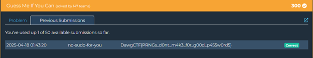

Guess Me If You Can (CRYPTO)
This challenge involves predicting the output of a Linear Congruential Generator (LCG), a type of pseudorandom number generator. The key to this challenge is understanding how LCGs work and how to exploit their deterministic nature.
1. Admin account creation is important: The admin account is created first, with its password being the first output of the LCG after the initial seed.
2. Possible alternating pattern: Some password transitions follow an a=3 prediction while others don't, suggesting there might be a pattern that alternates or changes in some way.
3. Working backwards is key: If we can understand the pattern between consecutive passwords, we can work backwards from the first user password to the admin password.
Understanding Linear Congruential Generators (LCGs)
An LCG generates a sequence of pseudorandom numbers using the recurrence relation:
X_{n+1} = (a * X_n + b) % mWhere:
- X is the sequence of pseudorandom values
- a is the multiplier
- b is the increment
- m is the modulus
The challenge is to determine these parameters by observing the generated passwords, then use this knowledge to predict the admin password.
The Attack Strategy
I developed a script that:
- Registers 10 users to get a longer sequence of passwords
- Analyzes the differences between consecutive passwords
- Looks for consistent or alternating patterns in the sequence
- Tries to identify the LCG parameters (a and b)
- Generates admin password candidates based on different hypotheses
- Tests each candidate by attempting to log in
After analyzing the sequence of generated passwords, I was able to determine that the server was using an LCG with specific parameters. By understanding how the passwords were generated, I could predict the admin password and successfully log in.